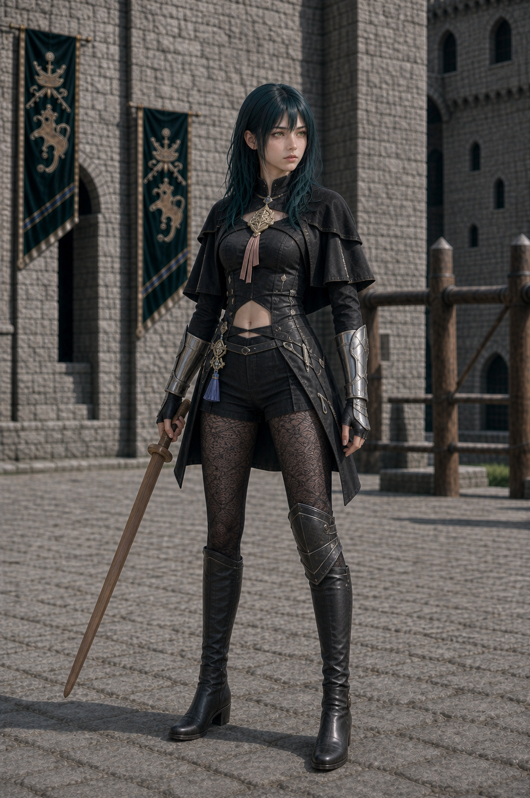
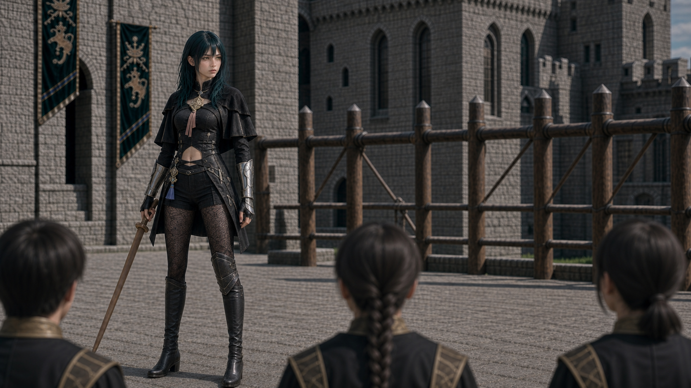
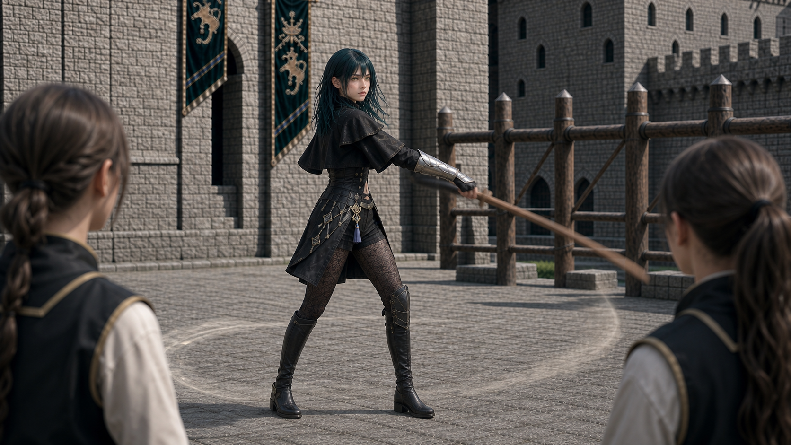
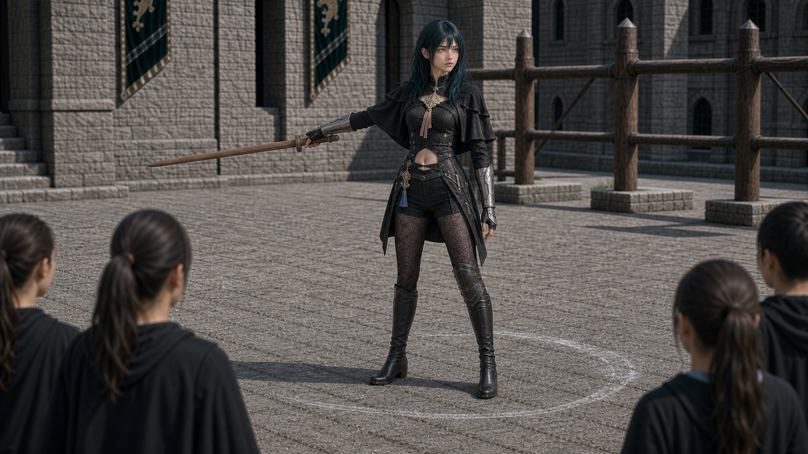
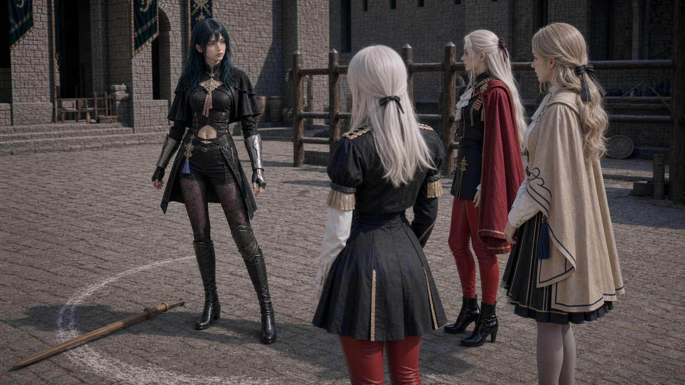
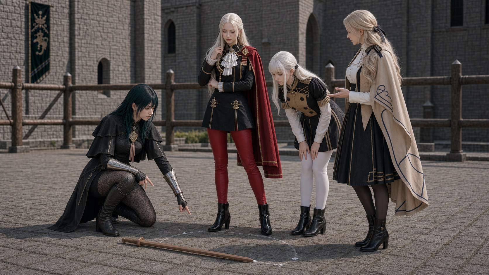
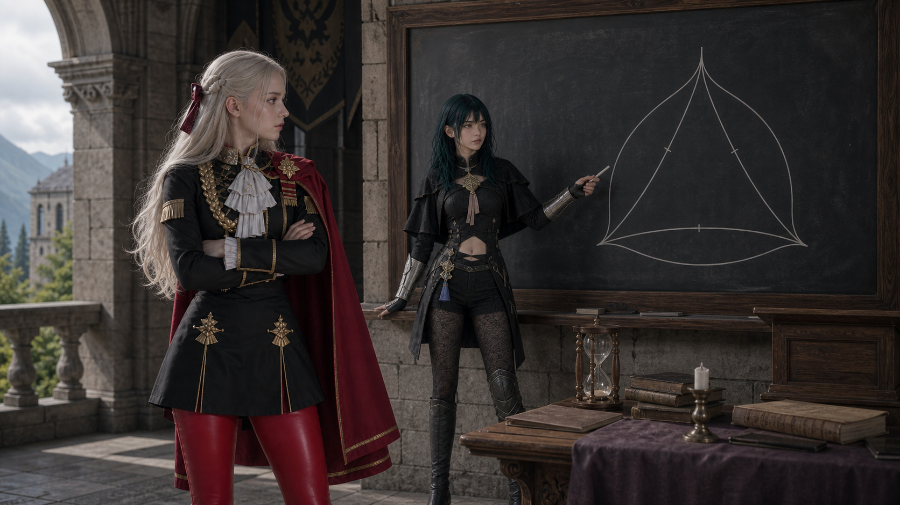
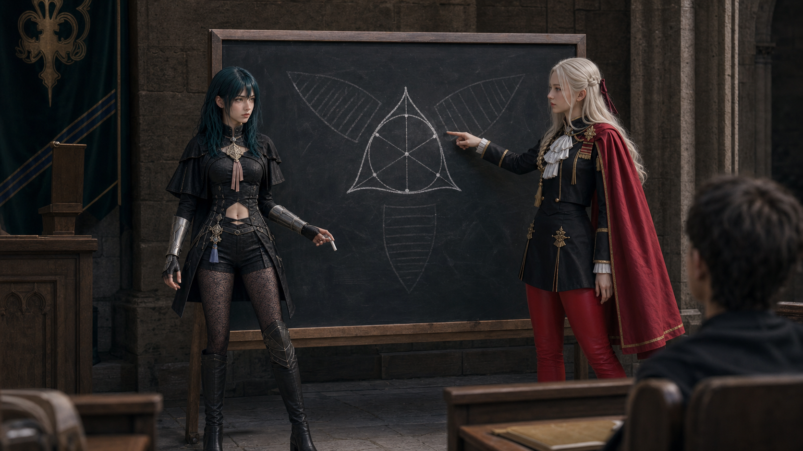
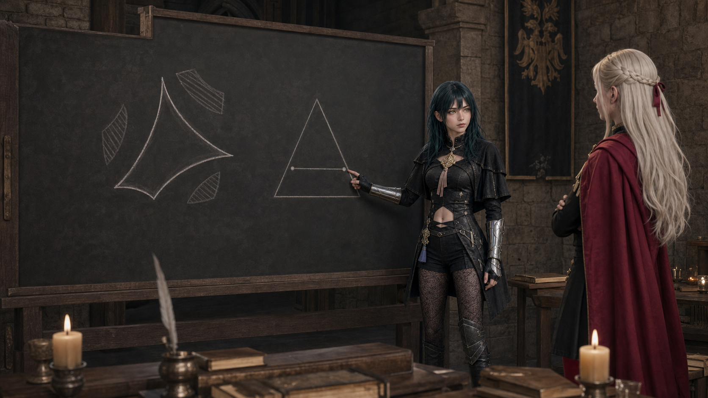

女贝老师服装候选
重点检查：短披肩、高领、露腹上衣、金色胸饰、银色护臂、短裤/裙片、纹样黑袜、单膝护具、长靴是否接近女贝老师学院服结构。

KAK-BYLETH-LECTURE · 服装修正候选
这页先看三件事：女贝老师是否终于像女贝老师；开场是否从贝老师持木剑演示；艾黛尔的质疑是否有证明缺口和图像行动支撑。
重点检查：短披肩、高领、露腹上衣、金色胸饰、银色护臂、短裤/裙片、纹样黑袜、单膝护具、长靴是否接近女贝老师学院服结构。

中文台词锚点：女贝老师：今天我们不练普通挥剑。我们考虑一个新问题：让这把一单位长的训练剑转个 180 度掉头，它扫过的区域能小到什么程度？



中文台词锚点：梅尔赛德斯提出“是不是至少要给它一个圆盘”的直觉；莉丝缇亚确认木剑单位长度；艾黛尔保留对“最小”的怀疑，为后续 deltoid 与凸区域比较做铺垫。


中文台词锚点：艾黛尔：优雅，不等于最小。我还没听到：为什么不能再小？如果边界允许凹进去，空隙也许还能被重复利用。贝老师的回应不是突然加规则，而是先承认一般情形难，再转向一个容易证明的特殊情形。


